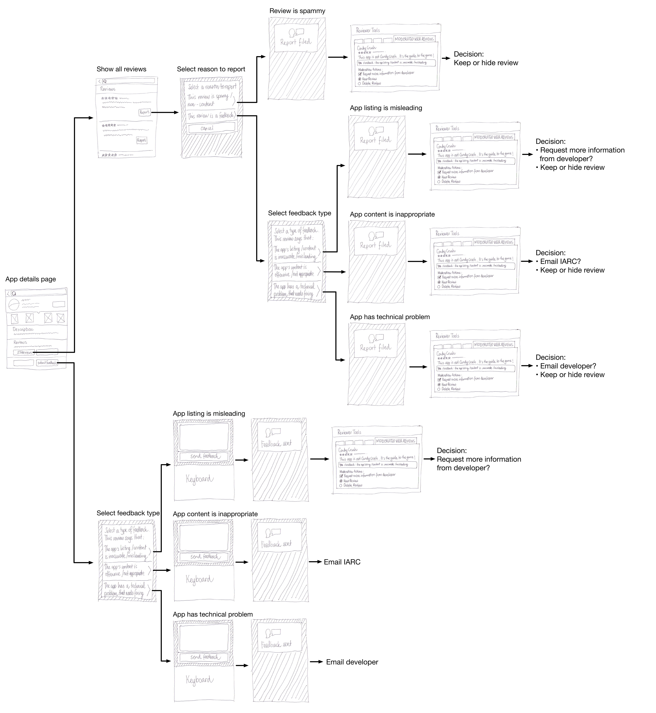

---
layout: MarketplaceUXSpec
multipage: false
---	

<div class="container">
	<h1>Concept &rarr; Submitting app feedback</h1>

	<!-- Pagination. If you have more than one page, set the multipage variable in the Frontmatter to true. Editing the pagination code happens in /_includes/homePagination.html. -->
	{% if page.multipage %}
		{% include homePagination.html %}
	{% endif %}

	<div class="col-sm-12 col-md-12 col-lg-12">
	
	  
	  		
	</div>
	
		
